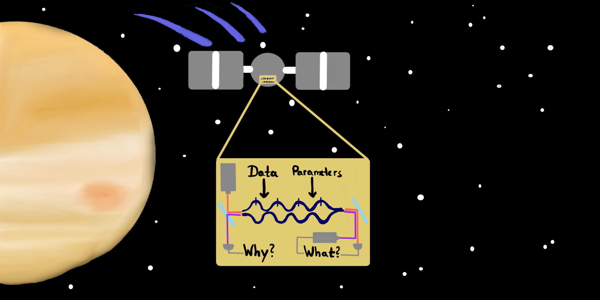

xQML for Space-Compatible Quantum Chips
This project develops explainable quantum machine learning algorithms for space applications. A major goal is to ensure that these methods are compatible with emerging photonic quantum chips. A particular focus lies on data reuploading models: a class of expressive models that operates with as little as a single qubit.
Project page →